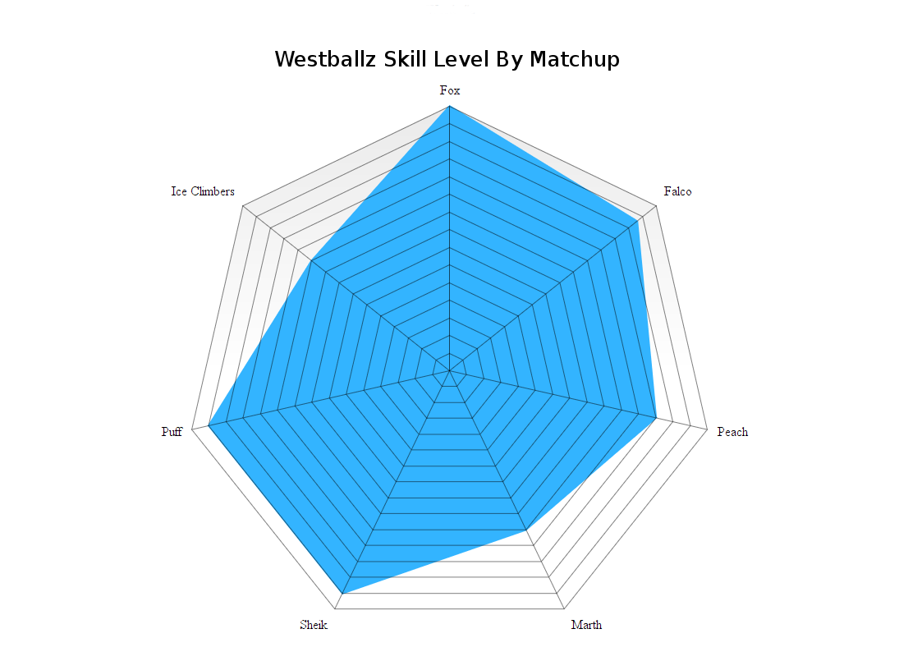

Performance, Projections, and Prediction:
Building a Basic Projection Algorithm
I'm going to ask a simple question with a fun answer - if we had data on every serious Melee set played in the last X years, what could we do with it?
- We could see which characters are most successful
- We could see which matchups are good/bad
- We can see which players are best at which matchups
- We can use it to predict wins/losses
The Big Picture
Basically, most projections are done with a simple "if seed1 > seed2, seed1 wins" method, even if one player is playing an opponent he usually loses to, or bad matchup, or a matchup that they specifically struggle with.
So if we want to build a better projection algorithm, we'll need to control for more variables than just seeding, and, more importantly, we'll need to quantify things that have up until now been rather handwavey.
Goals
- Trying to eliminate bias: almost every opinion I hear about tier lists underrates their own character and overrates their own problem matchups, so I specifically tried to limit my interaction with the data.
- Trying to improve performance: obviously, especially since Melee is pretty volatile and the "better player" doesn't always win, especially at very small skill differences
- Trying to understand more: using data to explain why things happen - character limitations, player strengths and weaknesses, rivalries, etc.
This algorithm should really only show differing performance in the close cases - an algorithm that predicts that the 400th seed would beat the 3rd seed based on a good matchup would be a pretty worthless algorithm (or a 100-0 matchup). But when you get to 13th seed vs 12th seed, the past data / matchups / individual strengths become somewhat more important in generating projections.
Let's begin by introducing the idea of "tiers" which any Melee player should be intimately familiar with already. While the difference between #5 and #6 might be hotly contested and mostly negligible, the difference between #7-12 and #18-46 is marked by a pretty noticable jump. So too it will be with our projections - ranking players isn't necessarily that important, but separating them enough such that upsets are easily noticable is much more important. If Fox players consistently have high win rate vs Peach players a full standard deviation higher above them in skill, a case for the matchup being bad for Peach starts to become pretty reasonable. On the other hand, a Fox ditto between Lucky and SFAT (in 2016) is close enough such that the winner is more or less determined by, for our purposes, random chance (as in: who is playing better that day, as opposed to who the clear better player is)
So this will be a pretty simple projection algorithm, since I am one person with a limited data set, but it will hopefully lay the foundation for something greater, potentially for a group of people with access to much more data than me.
Obtaining Some Data
To begin, I wrote a script that pulls tournament results from majors and supermajors. I used BeautifulSoup to scrape brackets on Liquipedia and output the results into a sqlite3 database.
Since this is just a proof-of-concept, I'm willing to proceed with just this data, even though a lot of matches (especially in Winners Bracket) are omitted from these brackets on Liquipedia (e.g. Mafia's win over Axe at Super Smash Con 2016). More data would provide a more complete picture, but at the very least this dataset would still have the most relevant wins/losses of the players with the most recorded sets (read: the strongest players).
I then manually assigned a character to each player with more than 2 wins (I had no real means of automating this since the brackets didn't always have characters, especially with the weaker players).
With a quick SQL query[1] we can now pull up any players wins and losses, and can filter by character / skill / etc. Some fun things we can do with this are look for the biggest upsets (Kalamazhu vs Wizzrobe, HMW vs Plup, Smilez vs Dizzkidboogie) or ranked player losses to relatively unknown players (DJ Nintendo vs Trulliam, Chillindude vs Nightmare) which by itself is a pretty cool thing to have access to.
We can stop here and take a quick look at overall character usage. Below we can see character usage as a ratio of players, and as a ratio of matches.
It's interesting to note the differences between these. Falco in particular is very striking - Despite ~17% of players using him, he only appears in ~11% of the matches, meaning lots of falcos are losing early in bracket ("The Falcomaster Effect"). Fox is the opposite, although 25% of players use him, he's present in ~29% of matches. Most of the differences make intuitive sense but it's still funny to observe some things (Pikachu, for instance, having <1% of players [i.e. Axe] but almost 3% of matches just based on how far he gets at every tournament)
I also manually seperated[2] the players into 8 tiers based on skill, with 1 being the highest and 8 being unlikely to make finals bracket at a major. I did this manually because I only had access to final brackets (so I couldn't just use winrate due to lack of R1/R2 pools), but long-run this could easily be done with any sort of ranking (MIOM top 100, raw winrate, whatever)
| Tier 1 | Tier 2 | Tier 3 | Tier 4 | Tier 5 | Tier 6 | Tier 7 | Tier 8 | |
| Socal Example | Mango | Westballz Lucky S2J | MacD HugS | Mikehaze Santiago | Eddy Mexico Alex19 | CDK Faceroll Squid ROFL Kira Ken | Jace Luigikid Reno | Players unlikely to place at nationals |
After that, I ran through the wins and losses to build profiles of each of the players. Specifically, for each match I gathered the following information:
- Player's win/loss vs that individual opponent
- Player's win/loss vs that opponent's character
- Player's character's win/loss vs that opponent
- Player's character's win/loss vs that opponent's character
- Player's win/loss vs an opponent at that tier difference
- Player's win/loss vs an opponent using that opponent's character at that tier difference
- Player's character's win/loss vs an opponent at that tier difference
- Player's character's win/loss vs an opponent using that opponent's character at that tier difference
Phew! lot's of variables, and lots of pretty convoluted variables, at that. But what can we do with this?
The Win/Loss Curve
Well, we can make a general prediction curve of win/loss percentage between two opponents of known skill level. I visualized our previous data with matplotlib, producing the curve below

This is basically all of melee - given two players of variable skills, who wins? This graph is very interesting because it tips us off as to exactly how upset-heavy or volatile the game is as a whole[3]. It's also appropriately zero-sum: if one player wins, the other must lose, so the graph must pass through 50% at skill difference = 0, and must be symmetric (if a player 2 levels higher has a 80% chance to win, then a player 2 levels lower has a 20% chance to win). These properties vanish once we start excluding certain datapoints, but it's kind of a neat thing to observe - what kind of curve is best for an esport? A game where skill is not a factor and victory is completely random isn't interesting, whereas a game where the better player wins 100% of the time isn't exciting, but where the curve best belongs is a cool thing to think about. Melee's seems to point to a 33% chance to upset, but I'd imagine a game like Smash 4 would be somewhat more upset-prone. (I speak about Melee vs Traditional Sports in the notes, if you're interested)
Anyways, hopefully you can already see where this is going. We can look at each of the characters and see roughly how they perform relative to everybody else (e.g. "Fox vs Everybody" or "Peach vs Everybody")

The really interesting thing about these curves is just how many of them cross 50% around skill difference = 0. I suppose on some level it's pretty obvious that any given person in any tier would have roughly 50% winrate vs anybody else in that tier, but it's kind of neat to see exactly how viable many of these characters really seem to be. Of course, this data doesn't necessarily capture the elite level (although it does really only capture national level and higher), and also obviously won't account for hypothetical "held back by character" arguments like "Abate would be so good if he was as good at Fox as he was at Luigi" but personally I don't really think the latter is that important anyways.
From this we can kind of narrow down our usable character list to ones that don't seem to suffer from a lack of data[4]. For example, Fox obviously has plenty of data whereas Yoshi definitely does not.
My personal favorite among these is Ice Climbers, who seems have enough data and forms a loose correlation between skill and winrate, but is so much more all over the place compared to anybody else. Of the charts with enough data to not be thrown out, ICs seem to be the most volatile with the weakest connection between skill and winrate, which I suppose explains the frequent upsets performed by ICs players and against ICs players (lint vs Dizzkid, Kaeon vs Nintendude, Dizzkid vs M2K, Infinite Numbers vs MacD, etc just to name a few off the top of my head)

Let's say we want to know about only matches of Fox vs Peach. Well, we can get that!
So if you want to talk about "the Fox vs Peach matchup", you are almost always talking about the middle point there, where skill difference ~= 0. If the odds of winning vs Peach as Fox, all else held equal, is 60%, then Fox performs vs Peach as, effectively, a 60-40 matchup (this doesn't necessarily match theory or ideal play, though!). However, that's not really how competition works in a vaccuum - sometimes you win against players better than you, and sometimes you lose against players worse than you. And in those cases, it's interesting to see what kind of probabilities you have[5].
Sadly, for the most part there wasn't really enough data in this set to make very many confident conclusions[6] about matchups, but that would certainly change with more matches and a larger dataset.
So, aside from looking at winrate at roughly equal skill, what can we learn here?
Analysis at Skill Variations
Well,  will give you the total expected win/loss rate against players worse than you, and likewise
will give you the total expected win/loss rate against players worse than you, and likewise  will return the win/loss rate against players better than you. We can call the former "consistency rate" and the latter "upset potential"
will return the win/loss rate against players better than you. We can call the former "consistency rate" and the latter "upset potential"
It's possible certain characters are more consistent, or more prone to pulling upsets, and it would be useful to know which characters have this property. We can apply this on each character's global curve to get "volatility ratings". If we had more data, we could also use this to generate a matchup spread that is heatmapped for these values, and check out these values at a glance. We'd have a real, quantifiable way to gauge the volatility of a matchup!
From here it becomes more of a selective game on who the best performing character really is - do you value strong matchup spread, or more consistency? Do you want a better shot at upsetting skilled opponents, or do you want to lose as little as possible to people beneath you? We can look at the complete picture of how everybody does against everybody[7]. As you might expect, it turns out the floaties (e.g. Puff, Peach, Samus) have higher consistency rates, but interestingly the chance to pull upsets has no clear pattern to it
Here's where the fun starts, though. Now that we have all this neat information, we can start making more accurate projections between player A and player B.
If the two players have matches in our database, we can put a lot of weight into their previous encounters and use that to project who will win. However, we can still use past data even if the two have never played before; if we know that in character X vs character Y, all else being held equal, character X has a better matchup, then we can give the nod to player A, who plays character X. We can loosely control for "being good or bad at a matchup", too.
This is a lot of variables, but luckily we have a pretty good sized training set and can just use machine learning!
For the classifier, I used scikit-learn and built the classifier around Decision Trees, mostly because that was the simplest model for the simplest version of this project[8].
I'm interested to see how much data is actually usable (at least in it's current state) but the very basic-level features we can use are the following[9]:
| Player 1 | Player 2 | Skill Difference | Individual Record | P1's Character | P2's Character | Winner |
| Mango | Wizzrobe | +2 | 5-0 | Fox | Falcon | Mango |
| MacD | Nintendude | -1 | 1-1 | Peach | Ice Climbers | MacD |
It doesn't quite have enough data to always be on the money, but it can use past matches and matchups to reasonably guess the result of matches between players that have never played before, even if the classifier is told they are of equal skill.
Using this kind of classifier with data about matchups might shed a bit more light on what the difference is between "being good at a matchup" vs "playing a good matchup". If you're good at a matchup that everybody else is good at just as much as you, then you aren't actually any better than normal, you just play a character who performs better in the current metagame. Why did player X start being able to beat player Y? Is it because they learned that specific matchup? Or did they just get better accross the board?
This isn't perfect though (In it's current form it's too simple to be perfect) and comes with some grains of salt.
Caveats:
- Nobody improves - and this is a big limitation to version 1.0 of this algorithm. A win vs some players in early 2015 just isn't as valuable as a win vs them in 2016, but under this algorithm it would be. This would be fixable (simply, but not necessarily easily) by making the skill tier calculation happen on a rolling basis (i.e. after every tournament), but that would require more work and this is just a proof of concept right now.
- This only uses data from very big tournaments, because people sandbag at locals / people go random characters to experiment / it's messy to judge the whole world on them
- This assumes everybody always plays the same character, and that playing a more advantageous matchup with a character you're worse at is roughly equal to playing your main in a bad matchup. I have no real reason to believe the latter aside from it making things somewhat more convenient, but without access to what everybody played in every match in every set then I don't have a good way to provide input otherwise (I am only one person!) If this sort of thing were applied to, say, smashgg or Tafokints, where they have countless brackets with characters already in a database, this assumption wouldn't be needed at all!
- "Overrepresentedness" is worth nothing. This model assumes that many foxes and few puffs is due to people simply wanting to play fox and not wanting to play puff - this is a direct measure of "best performing characters" as opposed to "best characters" since the former is objective and the latter is subjective
Performance
I compared this to the smash.gg projected bracket at Shine 2016. At this tournament, the projected bracket was always advancing the higher seed, although some players had higher/lower seeds than expected because they beat/lost to certain players and "stole" their seeds in pools. The classifier I trained didn't have access to the seeding (and obviously didn't have access to the results of the testing data), but had access to each players' character and match history at previous nationals.
The classifier performed identical to the smash.gg projected bracket except for the following predictions:
- Captain Smuckers < Son2
- Reno < Crunch
- Plup < SFAT
- Plup < Lucky
- S2J < Azusa
- M2K < Swedish Delight
- Infinite Numbers < Wobbles
- KJH < Wobbles
- dizzkid < Wobbles
- Kage < Prince Abu
- The Moon < Prof Pro
- Reno < Tafokints
- Nintendude < MacD
- Hbox < Mango
Of these 14 disagreements, smash.gg was correct for 5 of them and the classifier was correct for 9 of them, which is a marginally better yet still quite successful result considering the relatively small amount of data and few features used.
There are some "errors" here that I don't think are from flaws with the classifier, particularly the projection of Swedish Delight over Mew2King. Although this is obviously not what happened at this tournament (Mew2King destroyed Swedish), Swedish Delight had a winning record against Mew2King before this tournament. The classifier was basically told "Sheik Player 1 is slightly stronger than Sheik Player 2, but Sheik Player 2 ususally wins" and predicted that Player 2 would win, which I think is pretty reasonable.
Some other fun observations:
- This regularly predicts rather large upsets on Falcon players
- This classifier somewhat overrates Mango, likely because of favorable matchups against players he normally gets seeded under (Fox vs Puff, Fox vs Peach)
- This classifier doesn't seem to think Peach vs Puff is that bad for Peach, which is almost certainly because all of Armada's wins over Hbox are marked as Peach vs Puff
- I'm pretty impressed that it managed to guess the seeding so accurately, especially considering the information it had about skill levels was very handwavey
Overall a pretty cool result for such a simple classifier
Further Applications
You can also get really detailed portaits of each player's strengths and weaknesses, and use this data to build cool radar charts[10].
I'd enjoy building some sort of app where you can look at each player, see their win record / what they're extra good/bad at (and I might do that on a smaller scale for New England), but it's a bit too much work for one person and I'm pretty content with this project for now.
posted on 9/11/16Back to Top